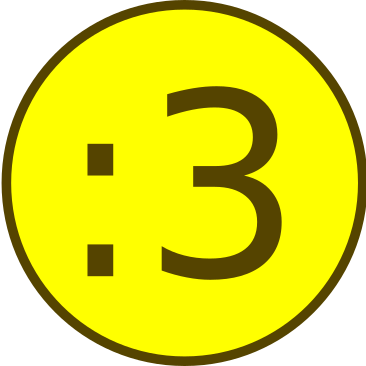

NICEMACS

Emacs
Recursive grep
The rgrep function is used to recursively search files matching a given pattern.
After running rgrep you will be asked for the search term, a pattern to specify
the filenames to search and finally the root directory of the search. The
results are presented in a buffer which links to the matches found.
Spacemacs configuration
Spacemacs shortcuts
| Keys | Description |
|---|---|
SPC f e d |
Open .spacemacs |
SPC f e R |
Reload .spacemacs |
SPC TAB |
Switch to last buffer |
SPC f s |
Save file |
SPC f f |
Find (visit) file |
SPC w d |
Kill current window |
SPC w D |
Kill all other windows |
SPC b b |
List buffers |
SPC b [n] |
Move the current buffer to window n |
SPC b n |
Next buffer |
SPC b p |
Previous buffer |
SPC b k |
Kill buffer |
SPC T n |
Toggle the theme |
SPC q r |
Restart emacs |
Usage notes
To tangle the nicemacs.el file from the command line execute the following
command:
emacs README.org --batch --eval="(org-babel-tangle)"
Then to include this in your spacemacs configuration add the following
expression to dotspacemacs/user-config:
(load "/home/aez/Documents/nicemacs/nicemacs.el")
To quickly jump to this very org-mode file it will be useful to have a shortcut
(defun visit-nicemacs () (interactive) (find-file "~/Documents/nicemacs/README.org")) (spacemacs/set-leader-keys "oon" 'visit-nicemacs)
Emacs-LISP REPL
From time to time it will be useful to have access to an emacs lisp REPL. To
start this repl run the ielm command.
Configuration layers
This configuration is used from within spacemacs, so it seems appropriate that I should also document the configuration layers that I use.
'(auto-completion better-defaults bibtex csv dhall emacs-lisp epub (ess :variables ess-r-backend 'ess) git graphviz (hackernews :variables hackernews-items-per-page 24) (haskell :variables haskell-completion-backend 'lsp haskell-process-type 'stack-ghci hsakell-enable-hindent-style "fundamental") helm html hy (javascript :variables javascript-import-tool 'import-js javascript-repl 'nodejs javascript-backend 'tern javascript-fmt-tool 'web-beautify) latex lsp maxima multiple-cursors nixos org python semantic (shell :variables shell-default-shell 'eshell shell-default-position 'right shell-default-width 50) speed-reading (spell-checking :variables spell-checking-enable-by-default nil enable-flyspell-auto-completion t) syntax-checking web-beautify yaml version-control treemacs)
Stuff
To quickly toggle between the default spacemacs themes use SPC T n (the
default bindings.)
Start up/splash page
I prefer the startup banner number 100 so set the following in my .spacemacs.
dotspacemacs-startup-banner 100
You may also want to remove some of the noise from the start up menu
dotspacemacs-startup-lists '()
Scratch buffer
If you want to scratch something out quickly there is the scratch buffer
provided by spacemacs at SCP b s. By default this opens in text mode. To avoid
always needing to switch it into org-mode we can set the following variable
instead.
(setq dotspacemacs-scratch-mode 'org-mode)
Owner menu
The spacemacs documentation recommends that you store all of your shortcuts with a prefix of "o" for owner.
(spacemacs/declare-prefix "o" "own-menu")
Ugly ugly scroll bar
I very much do not want to scroll bar popping up every now and then so I will remove the advice to do this!
(advice-remove 'mwheel-scroll #'spacemacs//scroll-bar-show-delayed-hide)
Completion
The following potentially reduce the latency in input which can be increased by unnecessary calls to a completion backend.
(setq company-idle-delay 0.5) (setq company-minimum-prefix-length 3)
LSP
The path to the current file in LSP is a little unnecessary.
(setq lsp-headerline-breadcrumb-enable nil)
LSP tends to be a bit too eager to display help under the default delay of 0.2 seconds and this also leads to an unnecessary amount of communication. To improve this we can increase the delay for both the documentation and the sideline display.
(setq lsp-ui-doc-delay 1.0) (setq lsp-ui-sideline-delay 1.0)
Haskell
(spacemacs/declare-prefix "oh" "haskell-menu") (spacemacs/set-leader-keys "ohr" 'haskell-process-restart) ;; Set the input method to TeX for using unicode. Use C-\ to unset this. (spacemacs/set-leader-keys "ohu" 'set-input-method)
Formatting code without LSP
If you are not using LSP then the following might be useful additions if you
have hindent installed. Although I suspect a nicer option is to use stylish-haskell with LSP.
(spacemacs/set-leader-keys "ohhr" 'hindent-reformat-region) (spacemacs/set-leader-keys "ohhb" 'hindent-reformat-buffer)
You will probably also want to set the haskell-enable-hindent-style variable
to "fundamental".
(setq haskell-enable-hindent-style "fundamental")
Formatting code with LSP
If you are using LSP then hindent is not available by default. stylish-haskell
seems to be an acceptable replacement though. The
lsp-haskell-formatting-provider is used to specify which formatting tool to
use.
(setq lsp-haskell-formatting-provider "stylish-haskell")
LSP and Haskell
Even after installing the haskell-language-server using the GHCUP installation
method there were some issues because emacs could not find it. It appears that
setting the lsp-haskell-server-path to the executable solved things.
- Install
ghcup, which will also offer to install the haskell language server for you.
GHCUP installation instructions are here
- Make sure that this has been added to the
exec-pathand thatlsp-haskell-server-pathis set. Note that some projects might get upset about the language server being used, adjust this and restarting emacs is a hacky solution by it works.
(setq exec-path (append exec-path '("/home/aez/.ghcup/bin"))) (setq lsp-haskell-server-path "/home/aez/.ghcup/bin/haskell-language-server-8.10.4")
- Make sure that the layer variables have been set to use LSP.
(haskell :variables haskell-completion-backend 'lsp haskell-process-type 'stack-ghci)
Maxima
See maxima-layer by Daniel Nicolai.
Javascript and Typescript
The following needs to be included for eshell to be able to find node and npm. I'm not sure why you need to do it twice, but if this doesn't work there is always a bash shell available too. See
(setenv "PATH" (concat (getenv "PATH") "/home/aez/.nvm/versions/node/v17.3.1/bin")) (setq exec-path (append exec-path '("/home/aez/.nvm/versions/node/v17.3.1/bin")))
TODO Miscellaneous configuration for prose
- There are the
org-fill-paragraphandunfill-paragraphfunctions which are useful to switch between representations of paragraphs when copying between editors.
Spell checking
- Highlight the text and use
SPC S rto spellcheck that region. - Use
SPC S bto spellcheck the buffer. - Use
SPC S sto open spelling suggestions for the work under the cursor. - It appears that when you add a word to a personal dictionary it is saved in
~/.aspell.en.pws.
Latex and Bibtex
To ensure that files with the extension .bibtex open in bibtex-mode we need
to explicitly request this
(add-to-list 'auto-mode-alist '("\\.bibtex\\'" . bibtex-mode))
(spacemacs/declare-prefix "ol" "latex") (spacemacs/declare-prefix "ob" "bibtex-menu")
There are a couple of files that I want to have easy access to for reference and to make minor edits. Having a function to access such a file easily is useful for this.
(defun visit-bib-and-tex-file (path-template) (interactive) (progn (find-file path-template) (goto-char 1) (recenter-top-bottom)))
This is a latex file for my reviews so the binding is olr.
(defun review-tex-file () "Open my review.tex file" (interactive) (visit-bib-and-tex-file "~/Documents/bibliography/review/review.tex")) (spacemacs/set-leader-keys "olr" 'review-tex-file)
This is a latex file for my reading list so the binding is oll.
(defun reading-list-tex-file () "Open my review.tex file" (interactive) (visit-bib-and-tex-file "~/Documents/bibliography/review/reading-list.tex")) (spacemacs/set-leader-keys "oll" 'reading-list-tex-file)
This is a bibtex file for my references so the binding is obr.
(defun references-bib-file () "Opens my bibtex references." (interactive) (visit-bib-and-tex-file "~/Documents/bibliography/references.bib")) (spacemacs/set-leader-keys "obr" 'references-bib-file)
The last-bib function opens the most recent bibtex file in the Downloads
directory in a new buffer. If there is no such file then a message is given to
indicate this.
(defun last-bib () (interactive) (let* ((bib-files (directory-files-and-attributes "~/Downloads" t ".*bib" "ctime")) (path-and-time (lambda (x) (list (first x) (eighth x)))) (time-order (lambda (a b) (time-less-p (second b) (second a)))) (most-recent (lambda (files) (car (car (sort (mapcar path-and-time files) time-order)))))) (if (not (null bib-files)) (find-file (funcall most-recent bib-files)) (message "No bib files found in ~/Downloads/"))))
Bibtex requires that capital letters in the title be surrounded by braces to ensure that they are capitalised correctly. The following function is a way to quickly add these braces to long titles. Just hightlight the relevant text and run the function.
(defun bibtex-braces () "Wrap upper case letters with brackets for bibtex titles." (interactive) (evil-ex "'<,'>s/\\([A-Z]+\\)/\\{\\1\\}/g"))
Some places seem reluctant to provide a bibtex file for a citation, but they all
seem to have RIS files available for download. There are tools to convert
between them. The bibtex-ris2bib function looks up the most recent RIS file in
your downloads directory and then converts that to a BIB file. You can then open
this file using the last-bib function from above.
(defun bibtex-ris2bib () "Convert the most recent RIS file in my downloads to a BIB file. TODO Add error message if there are no RIS files." (interactive "*") (let* ((all-ris-files (directory-files "~/Downloads" 1 ".*ris")) (modification-time (lambda (fp) (list (time-convert (file-attribute-modification-time (file-attributes fp)) 'integer) fp))) (ris-filepath (nth 1 (car (sort (mapcar modification-time all-ris-files) (lambda (x y) (> (car x) (car y))))))) (target-bib "/home/aez/Downloads/new.bib") (ris2xml-command (format "ris2xml %s | xml2bib > %s" ris-filepath target-bib))) (shell-command ris2xml-command)))
Now we need some sensible key-bindings for this functionality. The following aim to follow the naming used for the functionality because this is easier to remember. Owner Bibtex X where
- B for braces around upper case characters,
- C for convert between RIS and bibtex,
- F for format the current buffer,
- L for last bibtex file in
Downloadsand
(spacemacs/set-leader-keys "obl" 'last-bib) (spacemacs/set-leader-keys "obf" 'bibtex-reformat) (spacemacs/set-leader-keys "obb" 'bibtex-braces) (spacemacs/set-leader-keys "obc" 'bibtex-ris2bib)
I often want to be able to open my reading notes quickly so it would be useful
to have a function to do that. This will be bound to olp because it is opening
the PDF.
(defun nicemacs-open-review-pdf () "Open PDF of reading notes in evince." (interactive) (let ((pdf-viewer "evince") (review-path "/home/aez/Documents/bibliography/review/review.pdf")) (shell-command (concat pdf-viewer " " review-path " &")))) (spacemacs/set-leader-keys "olp" 'nicemacs-open-review-pdf)
If you want a word count there is the count-words function. This is used so
infrequently though that it is not really worth adding a binding for it. By
default it counts the words in the current buffer, but if you have selected a
region of text it will count the words and characters there.
Appearance
We can use a hook to switch to proportional font for org-mode, because lines now
become a bit tricky we need to include visual-line-mode otherwise things look
weird.
(add-hook 'LaTeX-mode-hook 'variable-pitch-mode) (add-hook 'LaTeX-mode-hook 'visual-line-mode)
And then to get the faces looking good for the various elements of the display we have the following configuration
(custom-set-faces '(font-lock-keyword-face ((t (:inherit fixed-pitch)))) '(font-latex-sectioning-2-face ((t (:inherit bold :foreground "#3a81c3" :height 1.3 :family "Noto Sans")))) '(font-latex-sectioning-3-face ((t (:inherit bold :foreground "#2d9574" :height 1.2 :family "Noto Sans")))))
Org-mode
Bindings for org-mode functionality start with o o for "owner org".
(spacemacs/declare-prefix "oo" "org-menu")
for toggle style functions we will have a submenu.
(spacemacs/declare-prefix "oot" "org-toggle-menu")
TODO Citation engine
The following package is required to use CSL with org-mode citations
(require 'oc-csl)
Writing prose
The following can be used to hide extra markup symbols
(setq org-hide-emphasis-markers t)
We can use a hook to switch to proportional font for org-mode, because lines now
become a bit tricky we need to include visual-line-mode otherwise things look
weird.
(add-hook 'org-mode-hook 'variable-pitch-mode) (add-hook 'org-mode-hook 'visual-line-mode)
To make sure that code blocks are still rendered with a fixed width font we need
to specify this. Note that the describe-char function is super helpful for
linking to further fine tuning via the customisation interface. Currently I am
using Noto with serifs for text and sans for headers.
(custom-set-faces '(org-block ((t (:inherit fixed-pitch)))) '(org-block-begin-line ((t (:inherit fixed-pitch :extend t :background "#ddd8eb" :foreground "#9380b2")))) '(org-block-end-line ((t (:inherit fixed-pitch :extend t :background "#ddd8eb" :foreground "#9380b2")))) '(org-code ((t (:inherit (shadow fixed-pitch))))) '(org-document-info ((t (:inherit fixed-pitch)))) '(org-document-info-keyword ((t (:inherit fixed-pitch)))) '(org-document-title ((t (:inherit nil :foreground "#6c3163" :underline t :weight bold :height 2.0 :family "Noto Sans")))) '(org-level-1 ((t (:inherit nil :extend nil :foreground "#3a81c3" :weight bold :height 1.4 :family "Noto Sans")))) '(org-level-2 ((t (:inherit nil :extend nil :foreground "#2d9574" :weight bold :height 1.2 :width normal :family "Noto Sans")))) '(org-level-3 ((t (:extend nil :foreground "#67b11d" :weight normal :height 1.1 :family "Noto Sans")))) '(org-link ((t (:underline t)))) '(org-meta-line ((t (:inherit fixed-pitch)))) '(org-property-value ((t (:inherit fixed-pitch))) t) '(org-special-keyword ((t (:inherit fixed-pitch)))) '(org-table ((t (:inherit fixed-pitch)))) '(org-tag ((t (:inherit fixed-pitch)))) '(org-verbatim ((t (:inherit fixed-pitch)))) '(variable-pitch ((t (:family "Noto Serif")))))
The writeroom-mode provides a clean setup for writing prose. It centres the
text and removes visual distractions. The following little function sets up a
toggle to turn this on and off. There is a variable writeroom-width to specify
how wide the display should be.
(require 'writeroom-mode) (defvar writeroom-active t "variable to say if writeroom is active") (defun toggle-writeroom () "Toggle the writeroom-mode on the current buffer." (interactive) (if writeroom-active (writeroom--enable) (writeroom--disable)) (setq writeroom-active (not writeroom-active)) ) (spacemacs/set-leader-keys "ootw" 'toggle-writeroom)
Literate programming
The org-babel-tangle function will tangle the current org-mode file. This is
bound to SPC m b t. You can tangle to multiple files by adding multiple
:tangle variables to the source environment.
Notebook programming
To use org-mode as a notebook, you need to have the corresponding language
included in org-babel-load-languages.
(org-babel-do-load-languages 'org-babel-load-languages '((maxima . t)))
- There is an example of using org-mode for Maxima notebooks here.
Nicemacs journal
I want a directory just for my journal which potentially will vary between
machines so a variable to describe where they live is useful. To make it clear
that these are my variables and functions I will try to maintain nicemacs-
prefixes. We will also define some decent settings here.
(defvar nicemacs-journal-directory "" "The directory for nicemacs journal files.") (setq nicemacs-journal-directory "~/Documents/journal") (setq org-agenda-start-day "-5d") (setq org-agenda-span 30) (setq org-agenda-start-on-weekday nil)
I need a way to talk about what the particular journal file is on any given
date. Updating the file about monthly seems sensible, so the filenames can
follow the pattern journal-YYYY-MM. NOTE that this function will set the
agenda file to the correct value whenever it is called and that the
org-agenda-files variable needs to be bound to a list or files rather than
the name of a single file, otherwise it will interpret that single file as a
list of files to use.
(defun nicemacs-journal-filepath () "The filepath of the current journal file." (interactive) (let* ((filepath-template (concat nicemacs-journal-directory "/journal-%s.org")) (time-string (format-time-string "%Y-%m")) (agenda-file (format filepath-template time-string))) (setq org-agenda-files (list agenda-file)) agenda-file)) (defun nicemacs-journal-previous-filepath () "The filepath of the /previous/ journal file." (interactive) (let* ((filepath-template (concat nicemacs-journal-directory "/journal-%s.org")) (seconds-in-week (* 7 (* 24 (* 60 (* 60 1))))) (time-string (format-time-string "%Y-%m" (time-subtract (current-time) seconds-in-week))) (agenda-file (format filepath-template time-string))) agenda-file))
I want functions to quickly visit our current journal file and to visit the current agenda because this is something I do several times a day. If the journal file does not exist then we just need to copy over the previous one. To do this we look for one with a date from a week ago.
(defun nicemacs-visit-journal () "Opens the current journal file. If it does not yet exist it makes a copy of the one from one week ago." (interactive) (let* ((current-journal-file (nicemacs-journal-filepath)) (previous-journal-file (nicemacs-journal-previous-filepath))) (if (not (file-exists-p current-journal-file)) (progn (message "creating new journal file") (copy-file previous-journal-file current-journal-file)) (message "opening journal file")) (find-file current-journal-file) (goto-char 1) (recenter-top-bottom))) (defun nicemacs-visit-agenda () "Opens the agenda after checking it has been set correctly." (interactive) (let ((agenda-file (nicemacs-journal-filepath))) (org-agenda-list)))
To make it easy to access these we will bind them to come convenient keys.
(spacemacs/set-leader-keys "ooa" 'nicemacs-visit-agenda) (spacemacs/set-leader-keys "oos" 'org-schedule)
Website
Set up for publishing my website, note that this will write the output directly
to the github repository for the site. Note that the :exclude variable can be
used to specify which files to ignore using a regular expression.
(require 'ox-publish) (setq org-publish-project-alist '( ("org-notes" :base-directory "~/public-site/org/" :base-extension "org" :publishing-directory "~/aezarebski.github.io/" :recursive t :publishing-function org-html-publish-to-html :headline-levels 4 :auto-preamble t ) ("org-static" :base-directory "~/public-site/org/" :base-extension "css\\|js\\|png\\|jpg\\|gif\\|pdf\\|mp3\\|ogg\\|swf\\|txt\\|cur\\|svg\\|csv\\|html\\|json\\|webp" :exclude "~/public-site/org/misc/matplotlib/ven.*" :publishing-directory "~/aezarebski.github.io/" :recursive t :publishing-function org-publish-attachment ) ("org-nicemacs" :base-directory "~/Documents/nicemacs/" :base-extension "org" :publishing-directory "~/aezarebski.github.io/misc/nicemacs/" :recursive () :publishing-function org-html-publish-to-html ) ("org-bibliography" :base-directory "~/Documents/bibliography/" :base-extension "png" :publishing-directory "~/aezarebski.github.io/resources/" :recursive () :publishing-function org-publish-attachment ) ("org" :components ("org-notes" "org-static" "org-nicemacs" "org-bibliography")) ))
The following function simplifies the process of compiling the site and committing it to github so it goes live. To enable this page to be copied to a file with a more sensible name and to have easier access to the logo there are some additional commands.
There are two functions here, the first, publish-my-site, is bound to SPC
oop runs the publishing and the second, publish-my-site-and-magit, bound to
SPC ooP runs the publishing and opens the magit buffer to commit and push the
changes.
(defun publish-my-site () (interactive) (org-publish "org") (let ((readme "~/aezarebski.github.io/misc/nicemacs/README.html") (index "~/aezarebski.github.io/misc/nicemacs/index.html")) (if (file-exists-p readme) (copy-file readme index t))) (copy-file "~/Documents/nicemacs/resources/nicemacs-logo.png" "~/aezarebski.github.io/misc/nicemacs/resources/nicemacs-logo.png" t) (copy-file "~/public-site/org/scratch.html" "~/aezarebski.github.io/index.html" t) ) (defun publish-my-site-and-magit () (interactive) (publish-my-site) (magit-status "~/aezarebski.github.io") ) (spacemacs/set-leader-keys "oop" 'publish-my-site) (spacemacs/set-leader-keys "ooP" 'publish-my-site-and-magit)
The following function is useful for going to the root of my notes site which is a sensible starting point for looking up material without the browser.
(defun visit-my-site-index () (interactive) (find-file "~/public-site/org/index.org")) (spacemacs/set-leader-keys "oov" 'visit-my-site-index)
I used to have some commands for inserting tables and source code blocks into
org-mode files, but this functionality (and more) is all provided by
yasnippet. Just run SPC i s and it will start a search for the relevant
snippet: "source" and "table" are in there for example.
As of org-mode version about 9.3 the default behaviour appears to be that new
lines will be indented to the level of the current header. I would prefer that
new lines of text start at the start of the line. This can be achieved by
setting org-adapt-indentation to nil.
(setq org-adapt-indentation nil)
Miscellaneous
;; open the export menu (spacemacs/set-leader-keys "ooe" 'org-export-dispatch) ;; Make sure org files open with lines truncated (add-hook 'org-mode-hook 'spacemacs/toggle-truncate-lines-on)
There is a variable in spacemacs, dotspacemacs-whitespace-cleanup, which if
you set to 'trailing will remove trailing whitespace each time a file is
saved. It appears in the .spacemacs file with some documentation.
Tables
The org-mode support for tables is strong. There is the a neat snippet for
inserting tables and then in spacemacs, using , t will bring up some available
functions (including , t n which creates a new table for those that don't like
yasnippet). There is also org-table-transpose-table-at-point
Inline Latex and image display
Orgmode can display images inline, however it is useful to be able to toggle
this feature occassionally, particularly if there are large images which take up
too much space. There is a function org-toggle-inline-images which does this.
(spacemacs/set-leader-keys "ooi" 'org-toggle-inline-images)
The org-latex-preview function will show a preview of the latex fragment under
the mark. Running the command a second time will revert to the plain text.
(spacemacs/set-leader-keys "ool" 'org-latex-preview)
You can try it in the following expressions \(\alpha\)
\[ \frac{a}{b} \]
Hyperlinking in org-mode
By default, when you follow a link it will open in a new window in the current
frame. To follow links in the same window, you need to adjust the
org-link-frame-setup variable1.
(require 'ol) (add-to-list 'org-link-frame-setup '(file . find-file))
We know that we need to (require 'ol) here by looking at the end of the file
in which org-link-frame-setup is defined and seeing what it "provides" at the
end.
Shells
It is useful to have a prefix for more involved shell related commands
(spacemacs/declare-prefix "os" "sheila-menu")
Eshell
To make eshell the default shell in spacemacs add the following to the
dotspacemacs-configuration-layers. The position and width might need a bit of
tweaking to get something you like, but it is pretty easy to adjust the window
set up anyway.
(shell :variables shell-default-shell 'eshell shell-default-position 'right shell-default-width 50)
Sometimes it is nice to be able to quickly open a larger terminal window, the following does this. The mnemonic here is that we are using the bigger quote mark so it opens the bigger terminal window.
(defun shell-and-delete-windows () (interactive) (spacemacs/default-pop-shell) (delete-other-windows) ) (spacemacs/set-leader-keys "\"" 'shell-and-delete-windows)
The following is for searching the shell history, but I rarely use it.
(spacemacs/set-leader-keys "osh" 'helm-eshell-history)
It is useful to be able to look at what aliases are currently defined for eshell. The following function visits this file. Although the preferred way to edit the aliases in the eshell is using the definitions below!
(defun eshell-aliases () "Visit the file containing the eshell aliases." (interactive) (find-file-other-window eshell-aliases-file)) (spacemacs/set-leader-keys "osa" 'eshell-aliases)
The following expressions set up some useful aliases to have in the shell. Note
that while the shell is indespensible, dired is also a good solution in many
situations.
(require 'em-alias) (eshell/alias "cdk" "cd ..") (eshell/alias "cdkk" "cd ../..") (eshell/alias "cdkkk" "cd ../../..") (eshell/alias "ls1" "ls -1 $1") (eshell/alias "ff" "find-file $1")
Because no one has time for typing capital letters we will set the completion variable in the shell to ignore case during tab completion.
(setq eshell-cmpl-ignore-case t)
The value of exec-path is the list of locations that emacs will look for
executables on. The executable-find function plays the role of which for
emacs. We need to add ~/.local/bin so that it knows where to find haskell
executables and the .nvm path is so that it knows where to find javascript
programs that have been installed from npm.
(setq exec-path (append exec-path '("/home/aez/.local/bin")))
Bash
Sometimes it is useful to just be able to open a regular bash shell. The following binding helps with this.
(spacemacs/set-leader-keys "osb" 'shell)
Monitoring processes
There is an emacs function for monitoring the processes you are running called
proced. In spacemacs this is bound to SPC a P. The following configuration
specifies that the display should be updated every second.
(setq proced-auto-update-flag t) (setq proced-auto-update-interval 1)
Emacs Speaks Statistics
There are some useful materials about ESS which I have contributed to in the ESS intro.
(setq spacemacs/ess-config '(progn ;; Follow Hadley Wickham's R style guide (setq ess-first-continued-statement-offset 2 ess-continued-statement-offset 0 ess-expression-offset 2 ess-nuke-trailing-whitespace-p t ess-default-style 'DEFAULT) (when ess-disable-underscore-assign (setq ess-smart-S-assign-key nil)) ;; (define-key ess-doc-map "h" 'ess-display-help-on-object) ;; (define-key ess-doc-map "p" 'ess-R-dv-pprint) ;; (define-key ess-doc-map "t" 'ess-R-dv-ctable) (dolist (mode '(ess-r-mode ess-mode))))) ;; make documentation open in a useful mode in ess (evil-set-initial-state 'ess-r-help-mode 'motion)
LSP with ESS
Spacemacs provides good keybindings out of the box, and after setting up LSP
there is very little need to do any additional configuration for a nice R
experience. You just need to remember to install languageserver from CRAN.
HOWEVER I have found it laggy so if you want to disable this and use a different backend adjust your layer config with the following
(ess :variables ess-r-backend 'ess)
TODO Fix the buffer display settings so that help covers the REPL
The following might be useful as a starting point for this
(info "(ess) Controlling buffer display")
Setting up lintr for static analysis
(setq ess-use-flymake nil) (use-package flycheck :ensure t :init (global-flycheck-mode t))
Version control via magit
The following setting makes magit use the full frame when visiting the status.
(setq magit-display-buffer-function 'magit-display-buffer-fullframe-status-v1)
There are a few projects where the same commit message use used often. It would be nice to have a macro to fill this in each time for me. Since this is working with commits I will use the prefix "c" followed by an indicator of the appropriate commit message to use.
(spacemacs/declare-prefix "oc" "commits-menu")
Apparently, this is worth the time… so let's write a macro to make these easier to define.
(defmacro nicemacs-commits (fname cmessage) (list 'defun (intern (format "ncf-%s" fname)) () (list 'interactive) (list 'magit-commit-create `(list "--edit" ,(list 'format "-m %s %s" cmessage (list 'downcase (list 'format-time-string "%A %l:%M %p")))))))
And some useful examples should be bound to shortcuts.
(nicemacs-commits network "update citation network") (spacemacs/set-leader-keys "ocn" 'ncf-network) (nicemacs-commits review "update reading list") (spacemacs/set-leader-keys "ocr" 'ncf-review) (nicemacs-commits website "update website") (spacemacs/set-leader-keys "ocw" 'ncf-website) (nicemacs-commits journal "update journal") (spacemacs/set-leader-keys "ocj" 'ncf-journal)
File and buffer manipulation
If you want to kill buffers with names that match a regex there is the
kill-matching-buffers function.
(defun kill-all-other-buffers () "Kill all the buffers other than the current one." (interactive) (mapc 'kill-buffer (delq (current-buffer) (buffer-list)))) ;; Define a short cut to close all windows except the current one without killing ;; their buffers. (spacemacs/set-leader-keys "wD" 'spacemacs/window-manipulation-transient-state/delete-other-windows) ;; Define a short cut for following files (spacemacs/declare-prefix "of" "file-stuff") (spacemacs/set-leader-keys "off" 'find-file-at-point) (spacemacs/set-leader-keys "ofp" 'helm-projectile-find-file)
Handling large files
Visiting large or sensitive files is unpleasant. There is find-file-literally to
open a file in fundamental mode, following this up with font-lock-fontify-buffer
will make things look a bit nicer. This is a decent option if you have a massive
file and want to avoid crashing emacs. There is view-file which opens the file
in read-only mode but somehow manages to get syntax highlighting correct despite
the file being in fundamental mode.
(spacemacs/set-leader-keys "ofv" 'view-file) (spacemacs/set-leader-keys "ofl" 'find-file-literally)
Dired
By default dired displays the size of files in bytes, a more human friendly
description can be obtained by modifying the dired-listing-switches variable.
(setq dired-listing-switches "-alh")
Visiting friends
The following functionality is useful for defining visitors of frequently needed files.
(spacemacs/declare-prefix "ov" "visit friendly files") (defmacro nicemacs-visit (fname pname path) (list 'defun (intern (format "nvf-%s" fname)) () (list 'interactive) (list 'progn (list 'message (format "Visiting %s" pname)) (list 'find-file path))))
Then we need to define the actual files that we want listed
(nicemacs-visit nicemacs "nicemacs README" "~/Documents/nicemacs/README.org") (nicemacs-visit beast-notes "BEAST2 notes" "/home/aez/public-site/org/notes/beast2-notes.org") (nicemacs-visit colleagues "Colleagues notes" "~/Documents/professional/colleague-details.org") (nicemacs-visit spelling "Spelling list" "/home/aez/public-site/org/misc/spelling.org") (nicemacs-visit haskell-notes "Haskell notes" "/home/aez/public-site/org/notes/haskell-notes.org") (nicemacs-visit java-notes "Java notes" "/home/aez/public-site/org/notes/java-notes.org") (nicemacs-visit latex-notes "LaTeX notes" "/home/aez/public-site/org/notes/latex-notes.org") (nicemacs-visit nix-notes "Nix notes" "/home/aez/public-site/org/notes/nix-notes.org") (nicemacs-visit python-notes "Python notes" "/home/aez/public-site/org/notes/python-notes.org") (nicemacs-visit r-notes "R notes" "/home/aez/public-site/org/notes/r-notes.org") (nicemacs-visit ubuntu-notes "Ubuntu/Linux notes" "/home/aez/public-site/org/notes/linux-notes.org") (nicemacs-visit org-mode-notes "org-mode notes" "/home/aez/public-site/org/notes/org-mode-notes.org") (nicemacs-visit reading-list "Reading list" "/home/aez/Documents/bibliography/review/reading-list.tex") (nicemacs-visit review-references "Bibtex references" "/home/aez/Documents/bibliography/references.bib") (nicemacs-visit review-phylodynamics "Literature review: Phylodynamics" "/home/aez/Documents/bibliography/review/phylodynamics.tex") (nicemacs-visit statistics-notes "Statistics notes" "/home/aez/public-site/org/notes/statistics-notes.org")
There are some visitor functions that we want that are easier just to define manually.
(defun nvf-journal () (interactive) (nicemacs-visit-journal)) (defun nvf-last-bib () (interactive) (last-bib)) (defun nvf-website () (interactive) (dired-jump nil "/home/aez/public-site/org/index.org")) (defun nvf-professional () (interactive) (dired-jump nil "/home/aez/Documents/professional/README.org"))
And finally we need to writing keybindings for these.
(spacemacs/set-leader-keys "ovb" 'nvf-last-bib "ovc" 'nvf-colleagues "ove" 'nvf-nicemacs "ovj" 'nvf-journal "ovl" 'nvf-reading-list "ovnb" 'nvf-beast-notes "ovnh" 'nvf-haskell-notes "ovnj" 'nvf-java-notes "ovnl" 'nvf-latex-notes "ovnn" 'nvf-nix-notes "ovno" 'nvf-org-mode-notes "ovnp" 'nvf-python-notes "ovnr" 'nvf-r-notes "ovns" 'nvf-statistics-notes "ovnu" 'nvf-ubuntu-notes "ovp" 'nvf-professional "ovrr" 'nvf-review-references "ovrp" 'nvf-review-phylodynamics "ovs" 'nvf-spelling "ovw" 'nvf-website)
TODO Searching files
Here is an example of a nifty little function to help search my notes. It would be nice to abstract this into a macro so we can write similar searches for other directories.
(defun nsg-notes () (interactive) (let ((search-terms (read-string "Search term: "))) (progn (message search-terms) (rgrep search-terms "*.org" "/home/aez/public-site/org/notes/")))) (defun nsg-journal () (interactive) (let ((search-terms (read-string "Search term: "))) (progn (message search-terms) (rgrep search-terms "*.org" "/home/aez/Documents/journal/"))))
And then we need to bind it to some keys to make it easier to use.
(spacemacs/declare-prefix "oS" "Search") (spacemacs/set-leader-keys "oSn" 'nsg-notes "oSj" 'nsg-journal)
Ibuffer
The Ibuffer menu provides a more featureful dired-like menu for buffers.
(spacemacs/set-leader-keys "ofb" 'ibuffer) ;; Open Ibuffer in the motion state rather than as the default emacs mode. (evil-set-initial-state 'ibuffer-mode 'motion)
The navigation mode for ibuffer needs to be adjusted to work nicely with vim keybindings.
Misc
Sometimes it is useful to get the fullpath of the file shown in a buffer. This
is bound to SPC o f d for owner-files-directory. This also writes the path to
the kill ring because often when you need this information it is because you are
about to include it in a buffer.
(defun message-buffer-file-name () "Print the full path of the current buffer and store this on the kill ring." (interactive) (kill-new buffer-file-name) (message buffer-file-name)) (spacemacs/set-leader-keys "ofd" 'message-buffer-file-name)
Suppose that you want to get a copy of the last file you downloaded in the current directory, this is a pretty common thing to do so a function would be helpful. This will probably be most useful to call from eshell so I won't give it a key binding just yet.
- TODO Clean up this rather ugly function and consider merging with
last-bib.
(defun cp-most-recent-download () (interactive) (let* ((all-files (directory-files-and-attributes "~/Downloads" t ".*" "ctime")) (path-and-time (lambda (x) (list (first x) (eighth x)))) (time-order (lambda (a b) (time-less-p (second b) (second a)))) (most-recent (lambda (files) (car (car (sort (mapcar path-and-time files) time-order)))))) (if (not (null all-files)) (let ((most-recent-file (funcall most-recent all-files))) (progn (message (concat "copying file: " most-recent-file)) (copy-file most-recent-file (concat default-directory (file-name-nondirectory most-recent-file)) 1))) (message "No file found in ~/Downloads/"))))
treemacs
Treemacs provides a file and project explorer. To summon treemacs use SPC f t
(treemacs). To edit the directories it tracks use the
treemacs-edit-workspaces function.
Unicode and Greek letters
To insert a unicode character based on its name use C-x 8 RET. Since typically
this is just the Greek letters we can define key bindings for them. A macro
makes this code a little cleaner.
(defmacro nicemacs-greek (lname) (list 'progn (list 'defun (intern (format "nag-%s-small" lname)) () (list 'interactive) (list 'insert (char-from-name (upcase (format "greek small letter %s" lname))))) (list 'defun (intern (format "nag-%s-capital" lname)) () (list 'interactive) (list 'insert (char-from-name (upcase (format "greek capital letter %s" lname))))))) (nicemacs-greek alpha) (nicemacs-greek beta) (nicemacs-greek gamma) (nicemacs-greek delta) (nicemacs-greek theta) (nicemacs-greek lambda) (nicemacs-greek mu) (nicemacs-greek nu) (nicemacs-greek rho) (nicemacs-greek sigma) (nicemacs-greek psi) (nicemacs-greek omega)
And now to specify the actual keybindings
(spacemacs/declare-prefix "ou" "unicode-stuff") (spacemacs/set-leader-keys "oua" 'nag-alpha-small "ouA" 'nag-alpha-capital "oub" 'nag-beta-small "ouB" 'nag-beta-capital "oug" 'nag-gamma-small "ouG" 'nag-gamma-capital "oud" 'nag-delta-small "ouD" 'nag-delta-capital "outh" 'nag-theta-small "ouTh" 'nag-theta-capital "oul" 'nag-lambda-small "ouL" 'nag-lambda-capital "oum" 'nag-mu-small "ouM" 'nag-mu-capital "oun" 'nag-nu-small "ouN" 'nag-nu-capital "our" 'nag-rho-small "ouR" 'nag-rho-capital "ous" 'nag-sigma-small "ouS" 'nag-sigma-capital "oup" 'nag-psi-small "ouo" 'nag-omega-small)
Yasnippet snippets
Snippets usually live in ~/.emacs.d/private/snippets in a directory which is
named after the major mode for them to be used in. You need to
yas-recompile-all and yas-reload-all for any changes to the snippets to take
effect.
WARNING! Tangling this file will write the snippets to your private snippet directory which is convenient for me but may not be desirable for everyone. It is set this way so that I don't have to remember to copy the tangled files over all the time. To generate the directories that the snippets will be tangled to you can run the following.
The files--ensure-directory function will create these directories if they do
not already exist.
(files--ensure-directory "~/.emacs.d/private/snippets/ess-r-mode") (files--ensure-directory "~/.emacs.d/private/snippets/python-mode")
Yasnippet configuration
For some unknown reason, when I try to insert a snippet in the JSON mode I get
an error, "No JavaScript AST available". Things are working fine in other modes
so this might be something javascript specific, in which case, it is probably
easier just to call yas-insert-snippet directly when editing JSON.
TODO Org-mode
# -*- mode: snippet -*- # name: Include image with caption and label # key: include-image # -- \#+caption: WRITE A CAPTION! \#+name: fig:thing \#+attr_org: :width 500px \#+attr_html: :width 400px [[./path/to/image.png]]
Python
Here are a bunch of standard packages for statistical work
# -*- mode: snippet -*- # name: Standard python packages # key: pypacks # -- import pandas as pd import numpy as np import scipy.stats as stats import statsmodels.api as sm import statsmodels.formula.api as smf import matplotlib.pyplot as plt
R
The R snippets can be roughly devided into those that provide useful Useful package collections and those that provide Useful programming snippets. Those
that provide packages have a key which starts with rpack- and those that
provide programming constructs start with rhelp-.
Useful package collections
A snippet to include the basic packages which are pretty safe to import by default.
# -*- mode: snippet -*- # name: Standard R packages # key: rpacks # -- library(dplyr) library(reshape2) library(ggplot2) library(magrittr) library(purrr)
A snippet to include some extra packages that are often useful but probably aren't needed enough to be imported by default.
# -*- mode: snippet -*- # name: Extra R packages # key: rpacks-extra # -- library(jsonlite) library(stringr) library(cowplot) library(whisker)
A snippet to include packages that are useful when working with geographic data
# -*- mode: snippet -*- # name: R packages for computational geography # key: rpacks-geo # -- library(countrycode) library(sf)
A snippet to include packages that are useful for doing MCMC
# -*- mode: snippet -*- # name: R packages for MCMC # key: rpacks-mcmc # -- library(mcmc) library(coda)
Useful programming snippets
- Saving ggplot2 figures
This snippet offers some sensible default values for saving
ggplot2figures.# -*- mode: snippet -*- # name: Save a ggplot2 figure to default paper sizes # key: rhelp-ggsave # -- ggsave(filename = $1, plot = $2, ## A5 height = 14.8, width = 21.0, ## A6 height = 10.5, width = 14.8, ## A7 height = 7.4, width = 10.5, units = "cm") $0
- Writing CSV
A snippet with sensible defaults for writing a data frame to CSV
# -*- mode: snippet -*- # name: CSV output from R using write.table # key: rhelp-table # -- write.table(x = $1, file = $2, sep = ",", row.names = FALSE) $0
- Writing JSON
# -*- mode: snippet -*- # name: JSON output from R using jsonlite # key: rhelp-json-output # -- jsonlite::write_json( x = $1, path = $2, auto_unbox = T ) $0
- Writing HTML
# -*- mode: snippet -*- # name: Programmatically generating HTML # key: rhelp-html # -- library(htmltools) library(base64enc) #' An HTML tag encoding an image stored in a PNG. #' #' This uses the \code{base64enc} and \code{htmltools} packages. #' #' @param filepath is the path to the PNG #' @param ... is additional arguments to \code{tags$img} such as style. #' png_as_img <- function(filepath, ...) { if (tools::file_ext(filepath) == "png") { b64 <- base64enc::base64encode(what = filepath) tags$img( src = paste("data:image/png;base64", b64, sep = ","), ... ) } else { stop("Filepath given to png_as_img must be a PNG.") } } html_body <- tags$body( tags$h1("Hello World!") ) save_html(html_body, file = "index.html")
- Main function
A snippet to provide a main function which only runs when the script is called from the command line and passes any command line arguments through.
# -*- mode: snippet -*- # name: Main function for an R script to be used at the command line # key: rhelp-main # -- main <- function(args) { $0 } if (!interactive()) { args <- commandArgs(trailingOnly = TRUE) # if you are using argparse this might help... # args <- parser$parse_args() main(args) }
- Parse command line arguments
The argparse library, inspired by the python equivalent, provides a simple way to build up CLIs.
# -*- mode: snippet -*- # name: Example of how to use the argparse library # key: rhelp-argparse # -- library(argparse) # create parser object parser <- ArgumentParser() parser$add_argument( "-v", "--verbose", action = "store_true", default = FALSE, help = "Verbose output" ) parser$add_argument( "-s", "--seed", type = "integer", default = 1, help = "PRNG seed" ) parser$add_argument( "-p", "--parameters", type = "character", help = "Filepath to parameters JSON" ) args <- parser$parse_args()
Footnotes:
The add-to-list function is used to add elements to the start of a
list, this should only be used in configuration code; use push to add elements
to a list in emacs-lisp.